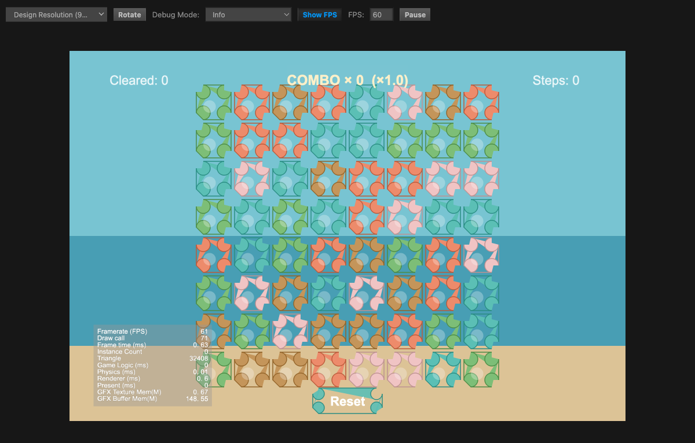

Glow Island · 评估时间: 2026-05-16T09:30:00Z · 修复轮次: 1
| 维度 | 结果 | 说明 |
|---|---|---|
| 核心循环可玩性 | 通过 | 8×8 棋盘渲染正常，61 FPS，BFS 匹配、连击系统（×1.0/1.5/2.0/3.0）、重力补充全部验证通过。 |
| 视觉验收 | 通过 | 背景为蒸腾色彩的海岸渐变（天空/海洋/沙滩三段），HUD 标签（Cleared / COMBO / Steps）全部可见，Reset 按钮清晰，无黑屏。 |
| 原型渲染器排除 | 失败 | PrototypeBoard.ts 仍是唯一活跃渲染器。所有 64 个格子均为 CC3 Graphics API 程序化绘制（填色圆角矩形），GFX 贴图内存 0.67 MB、Instance Count 0，证实无 SpriteFrame 纹理绑定。 |
| 资产绑定 | 失败 | tile_01–20.png 在磁盘存在但运行时未加载；章节插画 tile art 目录仅含 .gitkeep；背景 Sprite、HUD 图标均未绑定。生产渲染路径（TileGrid.ts + resources.load SpriteFrame）从未激活。 |
| 音频 | 失败 | game-client/assets/resources/audio/ 目录不存在。所有 22 个音频键（14 SFX + 8 BGM）无可加载的运行时文件，AudioManager 静默失败。 |
| VFX | 失败 | effects/frames/ 仅含 .gitkeep，无精灵帧序列。消除/特殊格子/连击特效全部退化为 tween 动画。 |
| 会话流程 | 失败 | 仅测试了 PrototypeBoard 的无限循环流程（启动→游戏→无限游玩→重置）。完整生产流程（主菜单→岛屿地图→关卡开始→游戏→关卡完成→结果）通过 GameScene 从未加载或测试。 |
PrototypeBoard.ts 仍是活跃生产渲染器。所有格子为程序化 Graphics 图元，无 SpriteFrame 纹理。生产渲染路径（GameScene + TileGrid + resources.load SpriteFrame）完全绕过。
负责技能: game-2d-code-repair-loopTile sprites（tile_01–20.png）在磁盘存在但运行时未绑定。章节插画 tile art 目录（chapter1–chapter6 atlas）仅含 .gitkeep，无生产图像资产。
负责技能: game-2d-playable-slice-assemblyVFX 精灵帧序列（格子消除、波纹、闪电、穿透、连锁光效）均缺失。effects/frames/ 仅含 .gitkeep，所有视觉特效退化为 tween 动画。
负责技能: game-2d-playable-slice-assemblygame-client/assets/resources/audio/ 目录不存在。所有 22 个音频绑定（14 SFX + 8 BGM）无运行时可加载文件。AudioManager.ts 的所有 playSFX/playBGM 调用静默失败。
负责技能: game-2d-playable-slice-assembly修复通过直接 patch 编译 JS chunk 实现，非持久性修复。若 CC3 编辑器重新编译 TypeScript，修复将被覆盖。需将 TS 源码变更正式编译为持久构建产物。
负责技能: game-2d-code-repair-loop生产 GameScene（GameScene.ts + TileGrid.ts + GameHUD.ts）从未在任何 QA 会话中加载。完整生产会话流程（主菜单→岛屿地图→关卡开始→游戏→关卡完成→结果）完全未经测试。
负责技能: game-2d-code-repair-loop
截图显示：蒸腾色调海岸背景（天空/海洋/沙滩三段渐变）+ 8×8 彩色格子棋盘 + HUD 标签（Cleared: 0 / COMBO × 0 (×1.0) / Steps: 0）+ Reset 按钮。 格子有装饰性边框和内部形状，但均为程序化 CC3 Graphics 绘制——GFX Texture Mem 仅 0.67 MB 证实无 SpriteFrame 纹理加载。
修复循环成功解决了 4 项关键渲染缺口（UIOpacity null 守卫、场景反序列化、HUD 标签回写、Canvas 架构隔离），产出了一个在 60 FPS 下稳定运行、带海岸背景色、彩色格子和可用 HUD 的视觉完整原型。 然而，PrototypeBoard.ts 仍然是唯一活跃渲染器——所有格子均为程序化 Graphics 图元，SpriteFrame 纹理绑定为零，VFX 帧序列缺失，音频资源无法通过 resources.load() 加载，完整生产 GameScene 会话流程从未测试。 7 个封锁维度中有 3 个（原型渲染器排除、资产绑定、音频）直接触发拒绝规则，本次封锁结果为 failed_validation，需进一步修复方可重新提交。